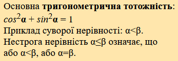
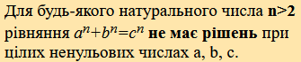
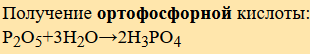
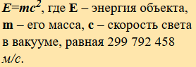
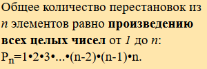

| Варіант | Оформлений текст | Список | Таблиця | Форма с керуючими елементами | Посилання та зображення |
|---|---|---|---|---|---|
| 0 |  | Дворівневий список з питаннями та варіантами відповідей. | Таблиця з даними про успішність 3-х студентів з деяких дисциплін 3-го курсу. | Форма реєстрації відвідувача сайту. | Зображення-банер, що веде на офіційний сайт університету. |
| 1 |  | Багаторівневий список, що відображає структуру університету (поділ по факультетам та кафедрам). | Таблиця з даними курсу валют. | Форма голосування. | Зміст сторінки, що складається з відносних гіперпосилань-якорів до її розділів. |
| 2 |  | Дворівневий список, що показує розподіл груп за спеціальностями (СП, КСМ...) або траекторіями (перша, друга...). | Таблиця з даними прогнозу погоди. | Форма для пошуку. | Відносне гіперпосилання для переходу до іншої сторінки цього ресурсу. |
| 3 |  | Випадаючий список студентів групи (можна обмежитися студентами однієї бригади). | Таблиця з даними змісту довільної книги (дві колонки, з назвою розділів та відповідними сторінками). | Форма для введення інформації про студента. | Відносне гіперпосилання, що веде до необхідного розділу іншої сторінки цього ресурсу. |
| 4 |  | Список дисциплін 3-го курсу, створений за допомогою списку визначень. | Фрагмент (довільного обсягу) табличного представлення періодичної системи хімічних елементів. | Форма для введення інформації про комплектуючі ПК. | Завдання на використання карт зображень (тегів map і area). Зображення, по клікам на яке відбувається перехід на сайт університету, сайт кафедри або розклад ‐ в залежності від місця кліка по зображенню. |
{kind=link}